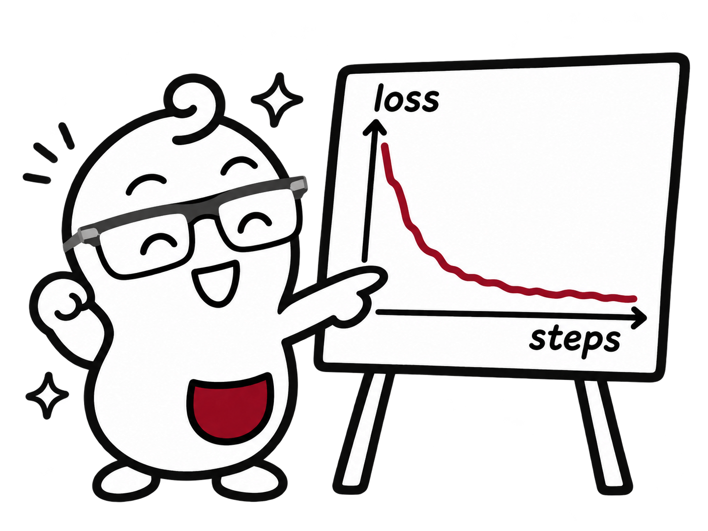

Massachusetts Institute of Technology · IAP 2027
6.S094 Deep Learning Alchemy
- Lectures
- Mondays and Wednesdays
2:30–4:00 p.m. - Location
- 4-270
- Dates
- January 4 to 29, 2027
Staff
-
Danial Hosseintabar Instructor
-
Ali Backour Instructor
Sponsored by Phillip Isola.
About
Deep learning research often follows a three-step cycle: developing ideas and designing experiments to test them, implementing and running those experiments, and interpreting the results to build intuition. As coding agents make implementation more efficient, the ability to ask good questions, design informative experiments, and learn from the results becomes even more valuable. How can we exercise the mental muscles behind these skills?
-
ideas
-
implementation
-

interpretation
Deep learning is full of surprising empirical phenomena that remain poorly understood. This course explores these phenomena in deep learning alongside their connections to theories that seek to explain them. With an emphasis on language models, topics span scaling laws, training dynamics and optimization, architecture, and generalization. Through hands-on assignments, students run experiments on a transformer-based model to build intuition for model behavior and compare their observations with the results introduced in the class. Their intuition will be assessed via prediction: quizzes will ask them to predict the outcome of an experiment they have not run.
Logistics
- Format. Eight lectures, on Mondays and Wednesdays during IAP.
- Prerequisites. Introductory linear algebra, probability and statistics, and prior deep learning experience.
- Registration and credit. Offered for credit with P/D/F grading. Fill out the registration form to take the class.
Schedule
Topics will be posted as the term approaches. Slides and readings will appear here after each lecture.
| # | Date | Topic | Materials |
|---|---|---|---|
| 1 | TBA | ||
| 2 | TBA | ||
| 3 | TBA | ||
| 4 | TBA | ||
| No class: Martin Luther King Jr. Day | |||
| 5 | TBA | ||
| 6 | TBA | ||
| 7 | TBA | ||
| 8 | Date TBA | TBA | |
Acknowledgments
This class draws on CS 312: Deep Learning Alchemy at Stanford University, created by Tatsunori Hashimoto, Suhas Kotha, and the CS 312 course staff. We thank them for sharing their course.